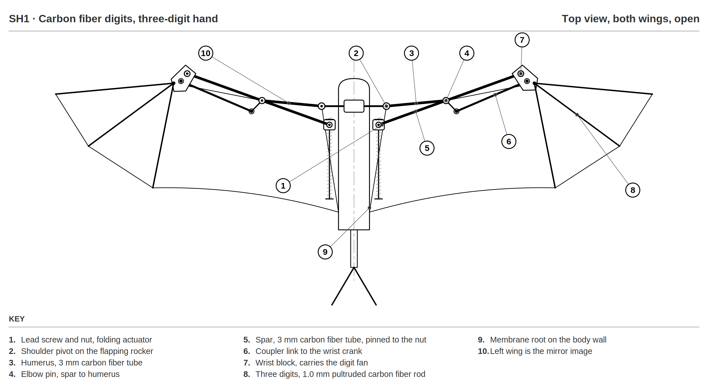
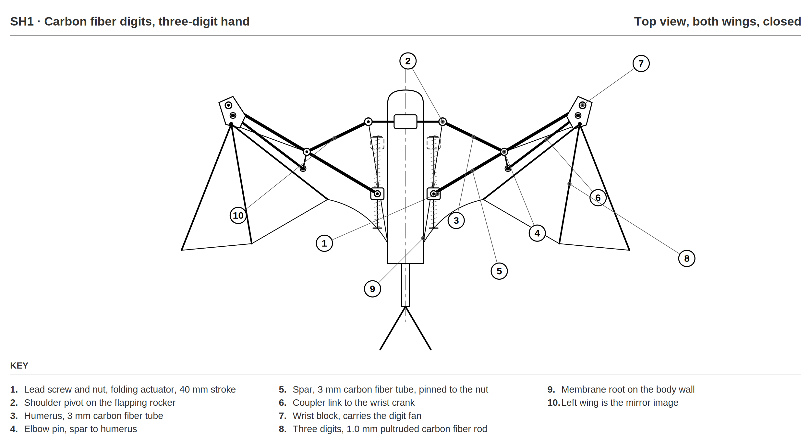
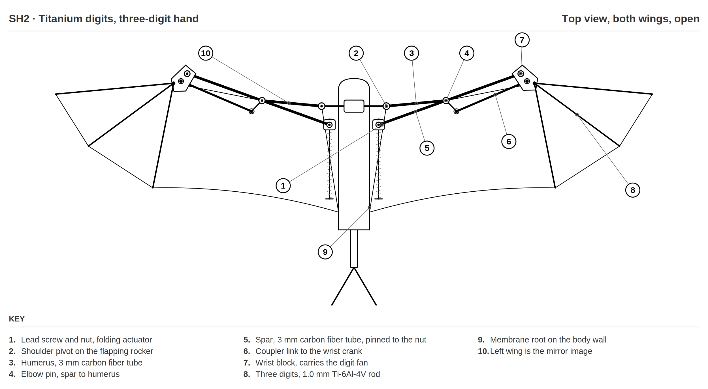
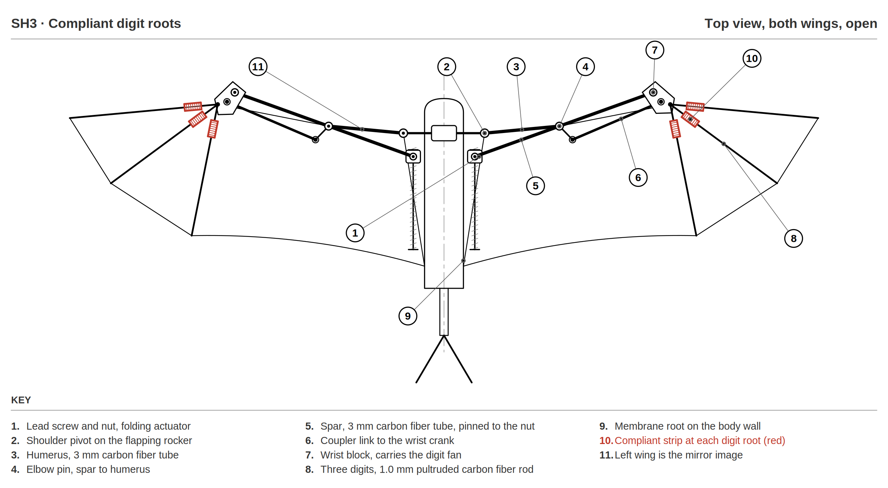

Chiropter
A bat-inspired flapping-wing drone with a 54 cm wingspan, an 80 g mass goal, and wings that fold in flight.
- Role
- Team lead; CAD approval and weight optimization; wing spars
- Timeframe
- 2026 to 2027
- Where
- Senior Design (ME 4015), Virginia Tech
- Tools
- Carbon fiber, titanium, hand calcs, [Add: CAD and analysis tools]
images/chiropter/hero.jpg
Overview
Chiropter is my Virginia Tech senior design project (Team 504): a bat-inspired flapping-wing drone with a 54 cm wingspan, sized after a medium diadem leaf-nosed bat, and an 80 g mass goal. Our team is building on the prototype from the previous design cycle. Every bat robot with sustained flight so far has had a wingspan over 150 cm, so getting there at a third of that size is the core challenge.
The vehicle is split into four subsystems: mechanics (wing folding, wing actuation, tail actuation), materials (spars and membrane), electrical (battery and motor), and controls (electronics and software).
This cycle's goals:
- Sustained flight: 5 minutes of continuous powered flight with flapping and folding coupled.
- Maneuverability: repeatable left and right turns and vertical maneuvers from asymmetric wing and tail action.
- Stability: stable, controlled flight for a full demonstration without sensor feedback.
- Reliability: 5 successful flight tests with no repair or replacement of major components.
My Role
I'm the team lead and give final approval on all CAD before it moves forward. I also lead weight reduction and optimization across the full model, keeping every subsystem's parts inside the 80 g mass budget.
On top of that, I own the wing spars: the carbon fiber structure that carries the wing loads and gives the membrane its bat shape.
For concept generation I took the previous cycle's CAD models and bill of materials, scaled the linkage to a 540 mm wingspan, and developed three spar concepts. I sized each one with hand calculations for wing loading, digit deflection, root stress, and stored elastic energy.
Wing Spar Concepts
All three concepts share the folding linkage from the previous cycle. A lead screw on each side of the chassis drives a nut fore and aft. The nut carries a carbon fiber spar through the elbow to the wrist. Running the nut backwards bends the elbow, sweeps the hand forward, and fans the three digits closed in one motion, so one actuator per side folds the whole wing.
- SH1, carbon fiber digits: three 1.0 mm pultruded carbon rods at 4°, 36°, and 78° from the wrist block, weighing 0.45 g per wing. At an estimated peak downstroke pressure of 59 Pa and 8 Hz flapping, each digit deflects 4.1 mm with a flexural safety factor of 17.7. The weakness: carbon rod splinters instead of bending, and the digits are the first parts to hit the ground in a crash.
- SH2, titanium digits: the same geometry in 1.0 mm Ti-6Al-4V. Stiffness stays within 5% of carbon, so the wrist blocks and kinematics carry over unchanged. The cost is 1.19 g (1.5% of the mass goal). A titanium digit bends visibly instead of shattering, with a yield safety factor of 7.6, so damage can be caught on the ground.
- SH3, compliant digit roots: SH1's carbon digits bonded to 0.18 mm unidirectional carbon strips at the root, sized for 15° of deflection under peak load. The three strips store 2.67 mJ and return it at stroke reversal, about 12% of the wing's peak kinetic energy. This follows the torsional-spring approach shown to cut peak input torque by up to 66%.
Gallery



